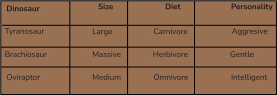

Why adopt a dinosaur?
Adopting a dinosaur isn’t just about having a unique pet; it’s about embracing
a new adventure and making a difference. Dinosaurs, though extinct, play a
significant role in scientific research and education. By adopting a dinosaur, you
contribute to ongoing efforts in paleontology and conservation.
The Impact of Dinosaur Adoption
Choosing the right dinosaur
Selecting a dinosaur can be a thrilling yet challenging decision. Consider factors such
as size, diet, and personality. Are you drawn to the mighty Tyrannosaurus rex or the
gentle Brachiosaurus? Here’s a quick guide to help you choose:

How to adopt
Adopting a dinosaur involves a few steps. First, you need to choose your preferred
species, then complete an adoption application. Many organizations offer dinosaur
adoption programs with various levels of support and engagement.
Adoption Process
Caring for your dino
Caring for your adopted dinosaur involves understanding its needs and ensuring its
well-being. From diet and habitat to enrichment activities, proper care is crucial for a
happy and healthy dinosaur.
Dino Care Tips
Resources
For more information on adopting a dinosaur and supporting paleontological
research, check out the following resources:
National dinosaur museum
Dinosaur adoption program
Paleontology research society